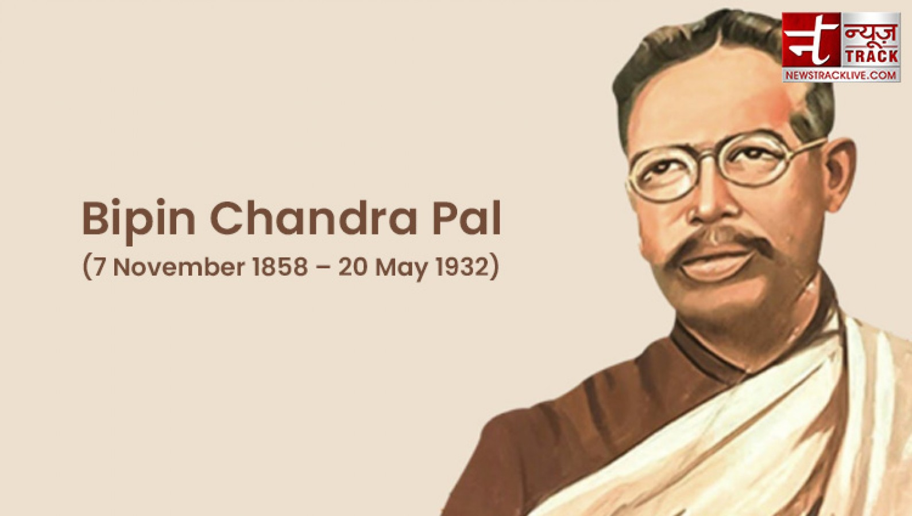

Bipin Chandra Pal

Born: 7 November 1858, Habiganj District, Bangladesh
Died: 20 May 1932, Kolkata
Education: St. Paul's Cathedral Mission College, Presidency University
Famously Known As: Father of Revolutionary Thoughts
Bipin Chandra Pal was a revolutionary born in 1858 during the Biggest revolution against the
British Army. He was a significant part of the Indian National Congress and encouraged the
abandonment of foreign goods. He formed a trio with Lala Lajpat Rai and Bal Gangadhar Tilak
to be known as Lal-Bal-Pal where they executed several revolutionary activities.
Bipin Chandra Pal, (born November 7, 1858, Sylhet, India [now in Bangladesh]—died May 20, 1932,
Calcutta [now Kolkata]), Indian journalist and an early leader of the nationalist movement.
By his contributions to various newspapers and through speaking tours, he popularized the concepts
of swadeshi (exclusive use of Indian-made goods) and swaraj (independence).
Though originally considered a moderate within the Indian National Congress, by 1919 Pal had
moved closer to the more militant policies of Bal Gangadhar Tilak, one of the leading nationalist politicians.
In later years Pal allied himself with fellow Bengali nationalists who resented the cult of personality
surrounding Mahatma Gandhi, the most popular nationalist leader. Pal's overriding concern in his writings
from 1912 to 1920 was to achieve confederation of the different regions and different communities within India.
After 1920 he remained aloof from national politics but continued to contribute to Bengali journals.
journalism, the collection, preparation, and distribution of news and related commentary and feature materials
through such print and electronic media as newspapers, magazines, books, blogs, webcasts, podcasts, social networking
and social media sites, and e-mail as well as through radio, motion pictures, and television. The word journalism was
originally applied to the reportage of current events in printed form, specifically newspapers, but with the
advent of radio, television, and the Internet in the 20th century the use of the term broadened to include all printed
and electronic communication dealing with current affairs.
The earliest known journalistic product was a news sheet circulated in ancient Rome: the Acta Diurna, said to date
from before 59 BCE. The Acta Diurna recorded important daily events such as public speeches. It was published daily
and hung in prominent places. In China during the Tang dynasty, a court circular called a bao, or “report,” was
issued to government officials. This gazette appeared in various forms and under various names more or less continually
to the end of the Qing dynasty in 1911. The first regularly published newspapers appeared in German cities
and in Antwerp about 1609. The first English newspaper, the Weekly Newes, was published in 1622. One of the
first daily newspapers, The Daily Courant, appeared in 1702.